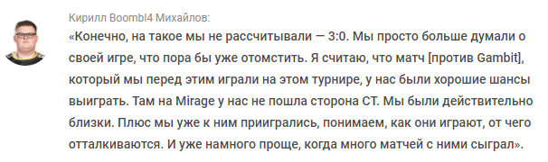

09 мая 10:37
S1mple о шансах NAVI
«Не думаю, что в прошлый раз мы показали все, на что способны»
NaVi поднялись на вторую строчку в рейтинге HLTV.org
Состав Natus Vincere по CS:GO занял вторую строчку в рейтинге лучших команд по версии портала HLTV.org. Неделей ранее коллектив Александра s1mple Костылева расположился на четвертой строчке. Лидером рейтинга осталась Gambit Esports. Тройку лучших команд замкнула Heroic. Состав Virtus.pro покинул топ-5 и расположился на седьмой строчке. G2 Esports набрала три позиции и заняла пятое место. 9 мая Gambit и NAVI сразились в решающем матче DreamHack Masters Spring 2021, завершившемся со счетом 3:0 в пользу Natus Vincere. Состав Кирилла Boombl4 Михайлова впервые в 2021 году переиграл ростер Дмитрия sh1ro Соколова.

